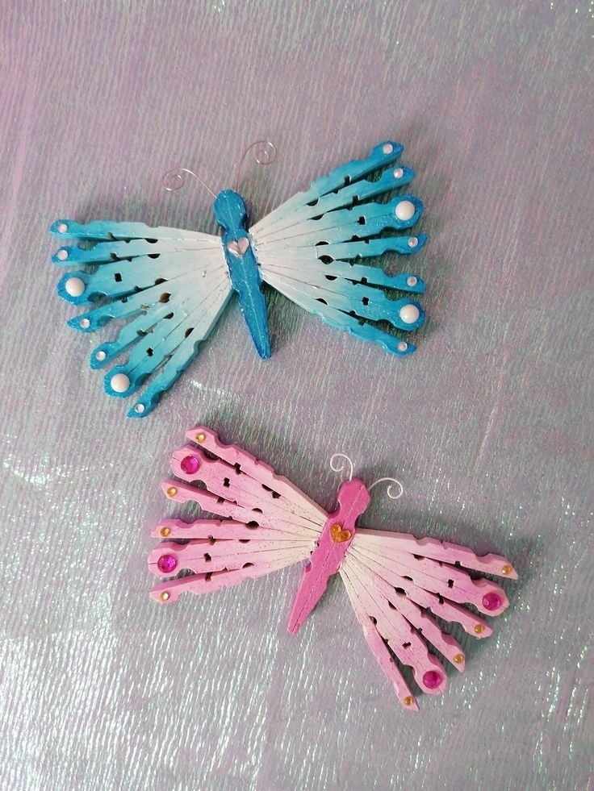
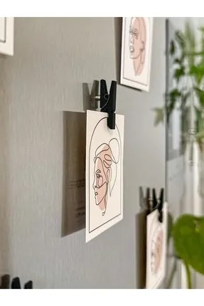

🦋 Mandal İle Dekoratif Kelebek Yapımı

Malzemeler:
• 8 adet büyük ahşap mandal
• Renkli akrilik boyalar (isteğe bağlı)
• İnce tel veya ip (antenler için)
• Sıcak silikon
• Makara ipi veya kurdele (gövde için)
• Boncuk veya taş (süsleme için)
Adımlar:
1- Mandalları istediğiniz renkte boyayın ve kurutun.
2- 2 mandalı üst kanat için, 2 mandalı alt kanat için paralel yerleştirip yapıştırın. Üst ve alt kanatlar arasında simetrik bir görünüm elde edin.
3- Diğer 2 mandalı üst ve alt kanatları birleştirerek sabitleyin.
4- Makara ipi veya kurdele kullanarak kelebek vücudunu oluşturun ve merkez kısmına yapıştırın.
5- İnce tel veya ip ile antenleri yapın ve gövdeye yapıştırın.
6- Boncuk veya taş ekleyerek kanatları süsleyin.
7- Kelebeği asmak için üst kısmına ip ekleyin.
📷 Mandal Fotoğraf Askısı

Malzemeler:
• Ahşap mandallar (5-20 adet, isteğe göre)
• İp (jüt ip, yün, makrome ipi vs.)
• Fotoğraflar, not kağıtları, kartpostallar
• Çivi, raptiye veya çift taraflı bant (duvara sabitlemek için)
• Makas
• (İsteğe bağlı) LED ışık, boncuk, pul, kurdele vs. (süsleme için)
Adımlar:
1- Duvara asacağın iplerin uzunluğunu belirle. Genelde 2–3 sıra yeterlidir.
Her bir sıra için yaklaşık 80–100 cm ip kesebilirsin (duvar boyutuna göre ayarla).
2- Kestiğin ipleri düz bir yüzeye ser ve uçlarını düzelt.
3- İpleri duvara yatay şekilde, aralarında eşit boşluk kalacak şekilde çivi, bant ya da raptiye ile sabitle.
Her ipin iki ucunu sabitleyerek ipleri gergin tutmaya özen göster.
4- Anlamlı anılardan seçtiğin fotoğrafları ya da kartpostalları mandallar kullanarak iplerin üzerine tuttur.
Dilersen not kağıtları da ekleyebilirsin (tarihler, alıntılar, küçük mesajlar).
5- Mandalları boyayabilir, üzerine desen çizebilir ya da sticker yapıştırabilirsin.
LED ışık dizisini iplerin çevresine dolayarak şık bir aydınlatma ekleyebilirsin.
Kurdele ya da küçük figürlerle askıyı daha kişisel hale getirebilirsin.
🧲 Mandal Magnet Yapımı

Malzemeler:
• Mandal
• Mıknatıs
• Yapıştırıcı (sıcak silikon, japon yapıştırıcısı vs.)
• Boya
Adımlar:
1- Mandallarınızı boya yardımıyla istediğiniz şekilde renklendirin ve kurumaya bırakın.
(Mandallarınız renkliyse bu aşamayı yapmanıza gerek yoktur.)
2- Kuruduğuna emin olduktan sonra yapıştırıcı ile mandallarınıza uygun olan mıknatısları yapıştırın ve kurumaya bırakın.
Kuruduktan sonra mandal mıknatıslarınız dilediğiniz gibi kullanabilirsiniz :)